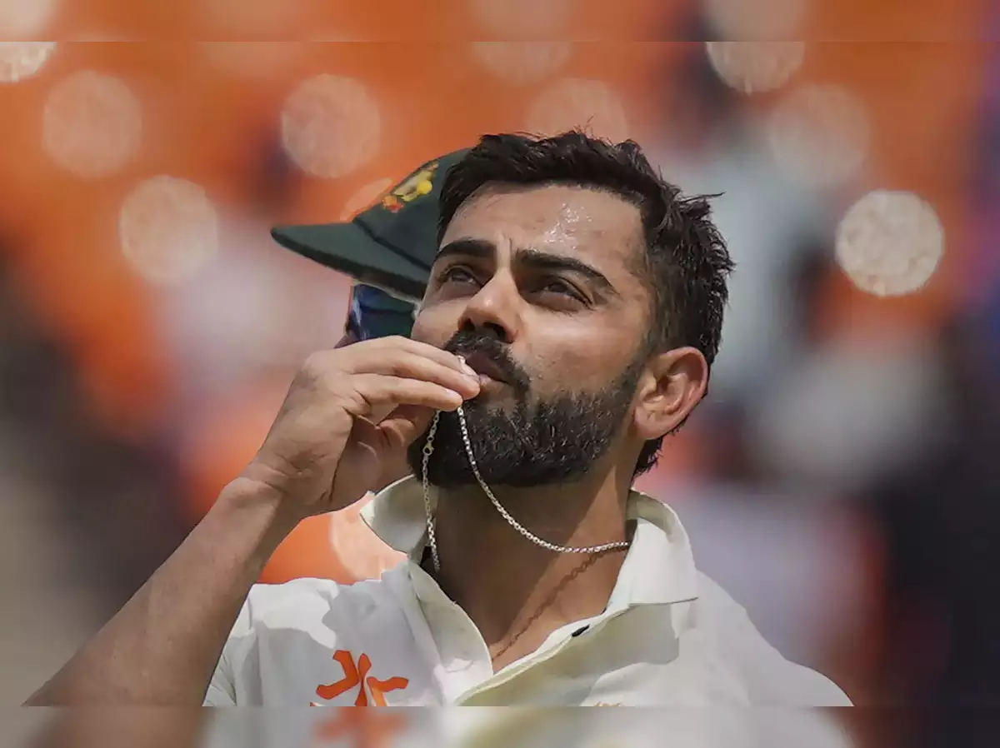

Absolute path
Relative path-The image which is in the same folder of the index(root file)

Relative path- The image which is inside the other folder of the same base folder
Relative path-The is just out of the root folder
Clickable image